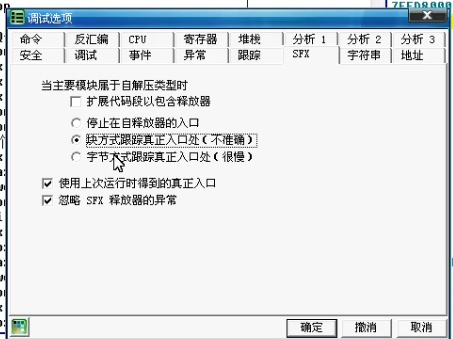

吾爱早期经典免费资料，b站搬运
找OEP
通用方法0、 概述
- OEP通常在基址附近，经过较大的跳转来到
1、单步法
- 一步一步跟踪，规则：
- 向上
jxx 不让实现，直接f4运行到 jxx 的下一行 - 如果跳转的下一行是
call 或者还是jxx(无论是向上还是向下), 则运行到再下一行 - 如果跑飞，在跑飞的地方不要f8，f7进去
- 其他一步一步往下，向下跳转也继续f8, 看到popad通常离OEP不远了
2、ESP突变
- ESP突变指关键句如(push)的下一句只有ESP一个寄存器变红(发生变化)
- 1. 单步到ESP突变
- 2. 在数据窗口跟随此时ESP的值(这是一个地址)，方法有三种：
- a) 在ESP的值上
右键 - 在数据窗口跟随
- b) 在命令窗口:
dd 地址 - c) 在命令窗口:
hr 地址 - 3. 此时数据窗口中，会显示该地址的值，右键值，
断点 - 设置硬件访问断点 - Word/Dword(两者都可) - 4. 运行（然后记得删除硬件断点
调试-硬件断点） - 5. 再单几步就到了
3、两次内存镜像法
- 1. 打开内存（
查看-内存或M标记） - 2. 在程序的
.rsrc 段 f2(右键-设置访问中断) (你知道，程序的段就是基址和后面一点那些) - 3. 运行
- 4. 再打开内存，在
401000位置的段下一个段（也就是第二个段(?)），运行 - 5. 然后按单步法的规则单几步就到了
4. 一步直达法
- 据说只有UPX和ASPACK能用
- 带壳程序的入口是pushad，那就查找
ctrl+fpopad(ctrl+L下一个查找结果), f4过去 - 剩下的单步
5、 模拟跟踪法
- 让OD自行查找
- 在内存中找到
SFX,imports,.. 一行，在命令行输入:tc eip<该行地址 - 此时左上叫显示跟踪，此方法比较慢，等一会就好
6. SFX 模拟跟踪
- 也是让OD自行查找
选项-调试选项-SFX, 选块方式跟踪或字节方式跟踪

0、 概述
- OEP通常在基址附近，经过较大的跳转来到
1、单步法
- 一步一步跟踪，规则：
- 向上
jxx不让实现，直接f4运行到jxx的下一行 - 如果跳转的下一行是
call或者还是jxx(无论是向上还是向下), 则运行到再下一行 - 如果跑飞，在跑飞的地方不要f8，f7进去
- 其他一步一步往下，向下跳转也继续f8, 看到popad通常离OEP不远了
- 向上
2、ESP突变
- ESP突变指关键句如(push)的下一句只有ESP一个寄存器变红(发生变化)
- 1. 单步到ESP突变
- 2. 在数据窗口跟随此时ESP的值(这是一个地址)，方法有三种：
- a) 在ESP的值上
右键 - 在数据窗口跟随
- a) 在ESP的值上
- b) 在命令窗口:
dd 地址 - c) 在命令窗口:
hr 地址 - 3. 此时数据窗口中，会显示该地址的值，右键值，
断点 - 设置硬件访问断点 - Word/Dword(两者都可) - 4. 运行（然后记得删除硬件断点
调试-硬件断点） - 5. 再单几步就到了
3、两次内存镜像法
- 1. 打开内存（
查看-内存或M标记） - 2. 在程序的
.rsrc段f2(右键-设置访问中断) (你知道，程序的段就是基址和后面一点那些) - 3. 运行
- 4. 再打开内存，在
401000位置的段下一个段（也就是第二个段(?)），运行 - 5. 然后按单步法的规则单几步就到了
4. 一步直达法
- 据说只有UPX和ASPACK能用
- 带壳程序的入口是pushad，那就查找
ctrl+fpopad(ctrl+L下一个查找结果), f4过去 - 剩下的单步
5、 模拟跟踪法
- 让OD自行查找
- 在内存中找到
SFX,imports,..一行，在命令行输入:tc eip<该行地址 - 此时左上叫显示跟踪，此方法比较慢，等一会就好
6. SFX 模拟跟踪
- 也是让OD自行查找
选项-调试选项-SFX, 选块方式跟踪或字节方式跟踪
ASPACK (2)
- 前六种
NSPACK(北斗) (3)
- 前六种
- ximo有1.3, 2.4, 3.7版本的示例，2.4, 3.7 用PEID查不出, 但可以看到EP区段是
nsp0或nsp1 - *北斗专用的一个特殊方法
- 据说因为是VC++写的
- 命令
at GetVersion回车 - 运行到下面的
retn - 然后向上滚动
- 2.4很怪，一开始是个jmp, 单步，就到了push
UPX (1)
- 前四种（六种？）
脱壳&修复入口点
1. OD自带的OllyDump- 见于UPX
- 在OEP右键，
用OllyDump脱壳调试进程 - 方式一方式二都行
用OllyDump脱壳调试进程2. LordPE + ImportREC- 见于UPX（在教程中两者都是OD菜单里工具里有的）
- （在OD中运行到了OEP的状态下）在LordPE程序列表里找到目标，修正镜像大小并完整转存
- *如果没脱干净(用查壳软件看，还是带壳)
- 用ImportREC附加在OD中加载了的程序
- 手动输入OEP地址(记得要减基址)，
自动修复IAT 获取输入表，(显示一下无效函数，没有), 修复转存文件，选择没脱干净的程序
- 用ImportREC附加在OD中加载了的程序
- 手动输入OEP地址(记得要减基址)，
自动修复IAT 获取输入表，(显示一下无效函数，没有),修复转存文件，选择没脱干净的程序